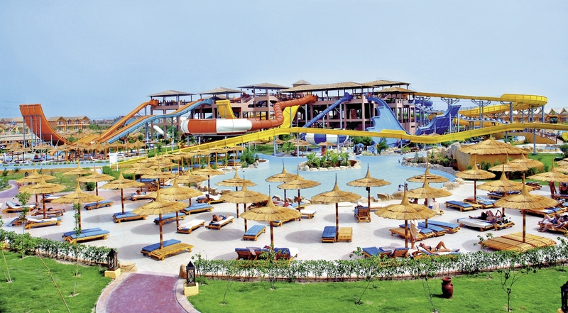
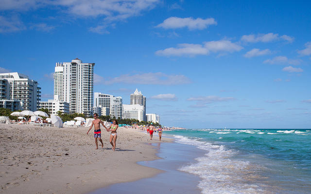
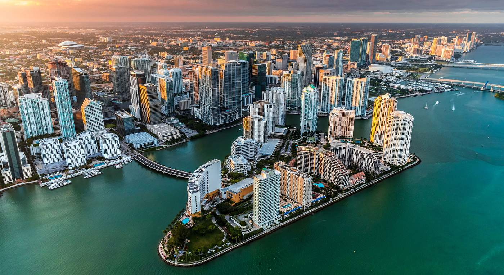

Kalendarium Lipiec - Egipt i USA
06.10.2019
Pierwszym  miejscem na mojej liście do odwiedzenia był Egipt, zdecydowałem się polecieć tam, ponieważ istoty pozaziemskie pomogły tam ludziom zbudować jedne z najbardziej majestatycznym budowli na świecie. Piramidy. Wynająłem pokój w hotelu Jungle Park Resort na 3 noce. W Egipcie spędziłem 4 dni.
W czasie pobytu w Egipcie odwiedziłem Piramidę Cheopsa, Sfinksa a także inne piramidy w Gizie. 2 dnia udałem się na plaże Hurghada. 3 dnia odwiedziłem Świątynie w Karnaku. Na koniec ostatniego dnia udało mi się też dostać do wnętrza Świątyni w Abu Simbel, strzerzonej przez 4 ogromne posągi Ramzesa II. Na tym zakończyłem moją podróż do Egiptu, wróciłem do Polski, aby odpocząć trochę od wysokiej temperatury panującej w Egipcie przez niemal cały rok.
Po 2 tygodniach w Polsce poleciałem do Ameryki, gdzie przez tydzień spałem w różnych Hotelach tam gdzie akurat byłem wypożyczonym samochodem. Pierwszym miastem w jakim byłem był Waszyngton stolica Ameryki. Odwiedziłem Biały Dom, jednak niestety nie mogłem wejść do środka. Podszedłem do Pomnika Waszyngtona, po czym udałem się w kierunku Nowego Yorku, tam pochodziłem po mieście, co zajęło mi 2 dni hah... no i na koniec Floryda, odwiedziłem Kennedy Space Center, a także Miami no i przy okazji Plaże Miami. Ty było niesamowite przeżycie. Zawsze chciałem odwiedzić Ameryka i na pewno jeszcze tutaj wrócę.  